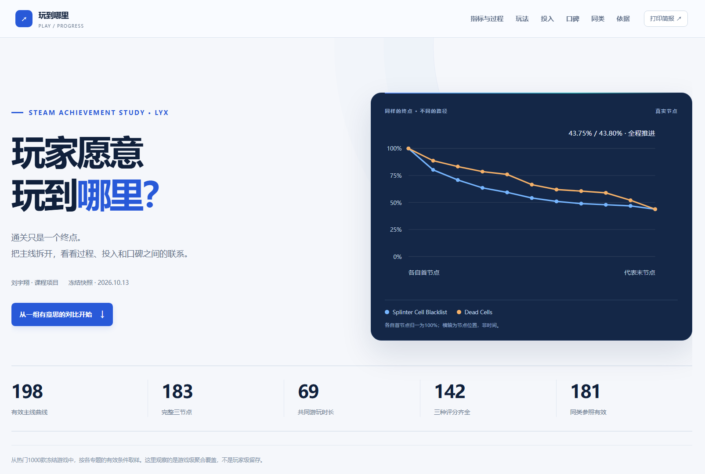

AchievementAnalysis
Overall project: Integrates Steam data from multiple sources to analyze game trends, clustering, reviews, and player engagement, providing explainable recommendations and interactive presentations.
My contribution: Implemented automated achievement classification and mainline progression analysis, interpreted player engagement using gameplay, playtime, and reviews, and visualized the data.